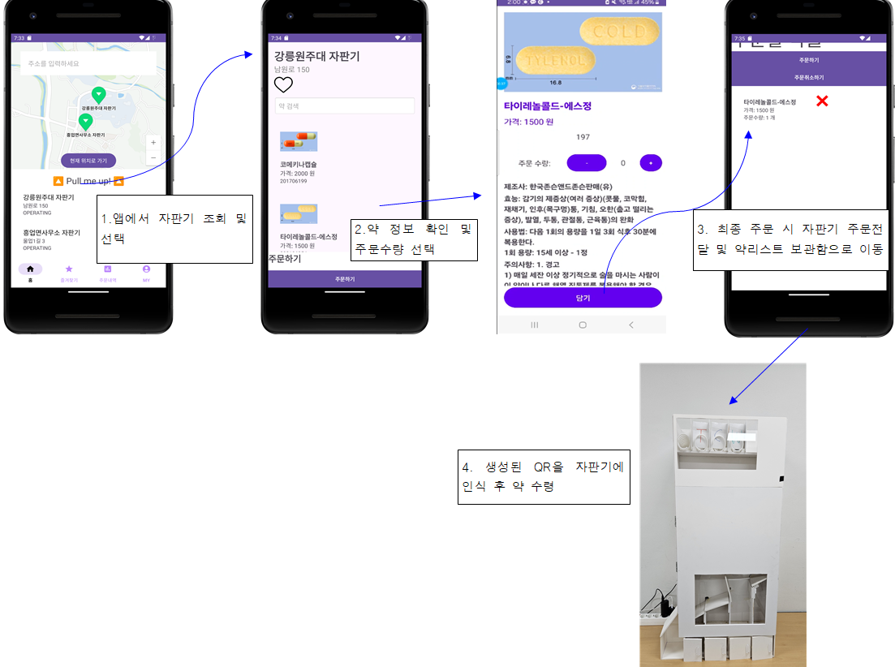
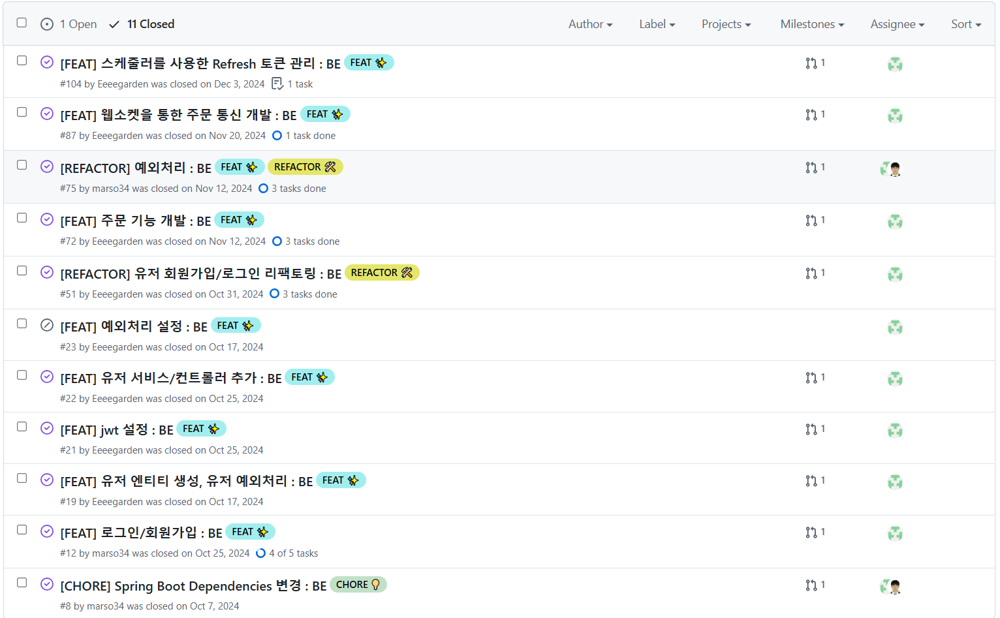
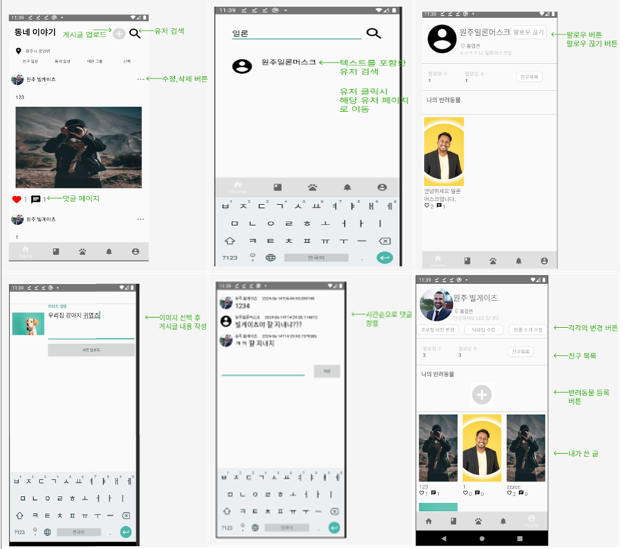

이정원 JeongWon Lee
Java & Spring 활용하여 서비스를 개발하는 서버 백엔드 개발자입니다. 주어진 목표에 도달하기 위해 빠르게 배우고 어디서든 잘 녹아들기 위해 노력합니다. 문제해결에 대해 더 나은 방법을 탐구하며 끊임없이 고민합니다. 이러한 과정과 경험들을 쌓아가며 회사와 함께 성장해 나가고 싶습니다.
Java & Spring 활용하여 서비스를 개발하는 서버 백엔드 개발자입니다. 주어진 목표에 도달하기 위해 빠르게 배우고 어디서든 잘 녹아들기 위해 노력합니다. 문제해결에 대해 더 나은 방법을 탐구하며 끊임없이 고민합니다. 이러한 과정과 경험들을 쌓아가며 회사와 함께 성장해 나가고 싶습니다.
약 자판기의 위치 및 재고를 모바일 어플리케이션으로 실시간 조회 및 주문이 가능한 4인 팀프로젝트 [BE:2/FE:1/ES:1]
✨ 사용 기술
Back-End : Java, Spring, JPA, Spring Security, Jwt, Swagger, WebSocket, AWS - EC2, RDS
✅ 프로젝트 요약 
👨💻 내가 기여한 부분
🚨 겪은 트러블 슈팅 및 해결과정
1. 자판기와의 양방향 WebSocket 통신 구현
2. Security Filter 단에서 발생한 예외처리 핸들링
✨ 사용 기술
Back-End : Java, Spring, JPA, Spring Security, MariaDB
✅ 프로젝트 요약 
👨💻 내가 기여한 부분
2024년 3월부터 6월까지 3인 팀으로 시작된 프로젝트를 현재 단독으로 계승하여 개발 중입니다. 초기 개발 단계에서 핵심 기능 구현에 주도적으로 참여했으며, 미완성의 프로젝트를 완성하기위해 기능을 개발하는 데 집중하고 있습니다.
🚨 겪은 트러블 슈팅 및 해결과정
1. 사용자 이름 검색 기능 최적화
간단한 웨이트 트레이닝을 취미삼아 하고있습니다. 처음에는 기초체력 및 몸무게 증진이 목적이였지만 꾸준히 함으로써 인내심, 성취감 등 다양한 내적성장을 이룰 수 있었습니다.